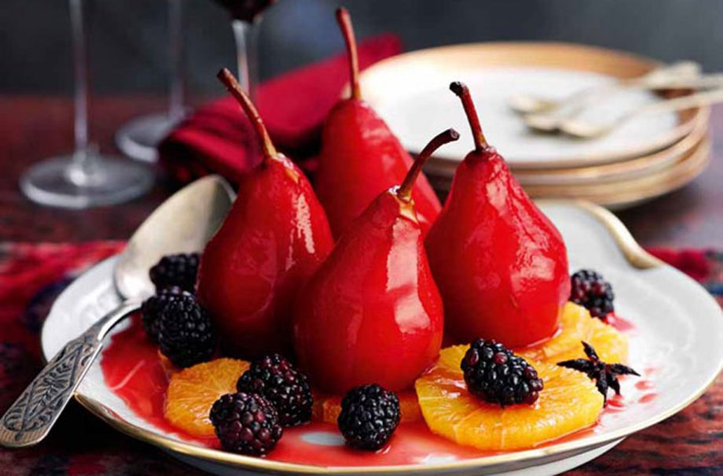

Slimming World’s spiced pears recipe

Serves:
Cost:
Prep:
Cooking:
Skill:
4
Cheap
10 Min
20 Min
Easy
These impressive Slimming World’s spiced pears are simple to make and packed full of sweet flavours. Cooked with orange, cinnamon and star anise, there’s something rather Christmassy about this dessert recipe. Ready in under half an hour this is a light dessert for those of you trying to be good. You can make them for a whole crowd – simply scale up the ingredients to make double, if you’re entertaining lots of people.
Ingredients
-
4 firm dessert pears (Williams or Conference)
- 4-5 whole black peppercorns
- 150ml diluted, no added sugar
- 200g fresh raspberries or blackberries
Method
- Peel the pears, leaving the stalks intact, and place in a bowl. Sprinkle the pears with the lemon juice to prevent them from discolouring. Pare a few thin strips of zest from one of the oranges using a vegetable peeler.
- Stand the pears in a saucepan, making sure they fit snugly. Add the orange zest strips, cinnamon stick, peppercorns, star anise and cloves.
- Pour in the wine and blackcurrant cordial and sprinkle over the sweetener.
- Bring to the boil, cover and cook on a medium heat for 10-15 minutes until the pears are just tender.
- Meanwhile slice the top and bottom from the oranges using a sharp knife, then cut away the peel and pith. Cut each orange horizontally into eight slices and place on a shallow serving dish.
- Remove the pears from the syrup and stand them on the orange slices.
- Boil the syrup rapidly for around 5 minutes until slightly reduced and thickened. Scatter the berries around the pears, then strain the reduced syrup over the fruit. Serve straight away or chill slightly before serving.
Top tip for making Slimming World’s spiced pears
We think these pears would make the perfect sweet treat on Halloween - ideal if you're hosting a Halloween-themed dinner party